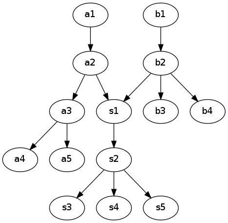

1. Overview¶

1.1. What the Cinode is?¶
- It is a new kind of network used to host files and run web-like applications
- It’s fully distributed system made of resources cumulatively shared by users of the network
- The security and authorization is enforced by best known encryption algorithms
- There’s no central management nor any authority
- Initially build on top of the Internet, it can also be used in other communication layers
1.2. How it’s built¶
The smallest building block of the Cinode is a Node. The Node itself is fully functional and allow the user to use it’s Local Access Interface. It is using a permanent storage such as a local hard drive to store information. All data is organized in form of data blobs.
Nodes can communicate between themselves using secure connections. Those communication channels are needed to exchange blobs between Nodes. This data migration is used to create backups of data and to create local blob cache that can be quickly accessed by the user.
Every data blob is uniquely named using hash-based identifier. This allows a global Distributed Hash Table (DHT) to be used in order to allow searching for a node holding particular blob.
The Local interface available to the user is presented in a form of a filesystem accessible through node’s built-in HTTP web proxy. Applications hosted inside Cinode are also loaded from this filesystem. They are executed locally on the user’s machine and have access to a part of the filesystem being app’s execution environment.
In order to allow users to communicate through Cinode applications, given filesystem directory or file can be shared with another user. Such shared resource can be then plugged into the filesystem of another user becoming available for his own instance of the application. Internally this share is realized by cresting cryptographic connections betwen blobs resulting in moving blobs between nodes. This process is fully automatic from the user’s point of view and doesn’t need any extra activity.
1.3. The security¶
Cinode was built with security in mind. The lack of server side forces us to use alternative methods for user authorization. The approach that has been used is based on cryptography.
Every blob in the Cinode network is stored and transferred to other nodes in an encrypted form. The ability to decrypt this data (knowing the decryption key) equals a read access.
In addition, each blob reveals extra cryptographic properties similar to digital signatures. These properties are used to validate blob and make sure that it’s content was created, modified or simply accepted by an authorized user. Simply put, it’s equal to write access authorization. The creator/modifier/acceptor of the blob must be in a possession of all information needed to make the blob valid such as a private key used to sign blob’s content.
The blob validation process does not require read access rights (the data encryption key). By doing so, nodes can safely exchange blobs between themselves without revealing the actual blob content. This allows less trusted 3rd parties to offer services like secure backups, load balancing and blob proxies without the need to reveal the information used by their clients.
1.3.1. Selected encryption algorithms¶
- Default hash - SHA-512
- Default symmetric cipher - AES-256 in CFB chaining mode
- Default asymmetric cipher - RSA using key of 4096 bits
1.3.2. Consideration of quantum cryptography¶
Since algorithms applied in the Cinode may need to stand the test of time, a quantum cryptography must be taken into account. Currently known attacks on symmetric ciphers result in reduction of the algorithm’s strengthens by factor of 2 so even if SHA-256 is cracked, it would have the same strength as SHA-128 which is still fairly good. The problem that still persists in the post-quantum era is the ability to break widely used asymetric ciphers such as RSA. For this reason, Cinode should consider using post-quantum cryptography ciphers such as NTRU in order to prepare for the future.
1.4. Local access interface¶
The user can access the Cinode by a web proxy server built into the node software. It can be disabled creating a node that participates in cross-blob traffic only, a server-like node not accessible by standard user interface.
The HTTP proxy interface provides an easy to use web panel viewable by any modern web browser. It also allows execution of client-side web-based applications written in javascript, native client code or similar technology. Files needed to execute such application are also hosted on the Cinode network removing any dependency for external services.
All information hosted inside the Cinode network is stored inside data blobs. They can form a structure similar to a filesystem due to a presence of directory and link blobs. The actual structure is a bit more complex than a directory tree and is called blob graph, directed cyclic one from the algorithmic point of view. User’s Cinode-hosted filesystem is a part of this graph with one blob promoted to be an entry point to user’s root directory:

In the example above, a1 and b1 are root blobs for separate users. Each user see his own part of the graph and doesn’t see the part to which he has no reference to. For example user of a1-based filesystem doesn’t see blobs: b1, b2, b3 and b4. Similarly, the user of b1-based filesystem doesn’t see blobs: a1, a2, a3, a4 and a5. The shared part (s1, s2, s3 and s4) can be accessed by both users.
The filesystem can be easily accessed and manipulated through a simple web API provided by the proxy. This is especially useful to Cinode-based applications. Each one of them is executed in a safe sandbox by using a randomized “virtual” hostname. In addition to that, this particular hostname provides an access to a particular sub-directory in the user’s filesystem blocking any access outside the sandbox. The randomized hostname for every application and same-origin policy implemented in all modern browsers prevents applications from accessing the information they were not authorized to. It also hardens any sniffing attempts by a malicious software installed locally on user’s computer.
Since the user’s password usually tends to be the weakest point in nowadays application, Cinode does use cryptographic asymmetric keys instead. In order to login, such key must be provided by the user. Similarly to how openSSH keys are protected, the key may require an extra passphrase before it can be used.
The master key and optional password screen is the first location the web proxy shows to the user. After successful login, the user is presented a master panel where he can view installed applications, browse for files, share nodes etc.
1.5. Limitations¶
The Cinode network is quite unusual approach to handle cloud services. Some of it’s properties make it unsuitable for certain types of applications. There are known limitations of the current Cinode architecture. Some of them can be and will be fixed in future versions, others are tightly bound to the uncommon networking model and thus can not be dealt with without changing root Cinode’s design decisions.
1.5.1. Latency and lack of realtime connectivity¶
The network is based on data blobs floating around between nodes and DHT network used to look for them. This solution, similar to the one used in trackerless torrent networks, introduces significant lag between the time a search is initiated and the time of final blob’s arrival. It greatly reduces the ability to exchange information between nodes where the delivery time is critical, especially while dealing with a lot of small data packets. To show an example, a low latency is needed in realtime collaboration software that use video and voice chats.
This limitation can be relaxed in the future by introducing direct connectivity between nodes. Cinode may either be used to establish needed realtime data channels or be just a negotiating medium allowing nodes to establish secure direct connection outside Cinode structure.
1.5.2. The always-remember nature of the network¶
There’s no central management unit in Cinode that could force some blobs to be permanently removed. Any blob that was sent to the network may stay there for unspecified amount of time. This introduces potential security threat due to the fact that some ciphers may be cracked over time.
Future versions of the protocol may include the ability to instruct other nodes to remove a particular blob. But even if this method is implemented, the actual fact of removing data can never be guaranteed in 100%.
1.5.3. Sniffing nodes¶
One form of malicious software existing in the network will be a sniffing node. A base node’s functionality may be extended to store as much information from the network as possible, gathering information for statistical analysis and for possible future cracking attempts.
Although current version does implement read access authorization, it’s security relies on the unbreakability of encryption algorithms applied there.
Due to the issue just presented, we highly encourage not to put any confidential, personal or sensitive information into the network during the current phase of it’s existence. It’s highly probable that some security issues are still present in the software. Instead, we propose to put publicly available information to the network first to gain reasonable amount of information used for testing purposes.
Future Cinode versions will implement ability to restrict read access even more so that it’s impossible to even download the encrypted content without proving that read access rights have been granted.
1.5.4. Encryption overhead¶
Cinode design strongly relies on high quality encryption standards. The tradeoff between encryption efficiency and the security is an always-win for the security. The “always-remember” nature of the network requires us to use the highest know security model since the data we store today may be used in future decryption attacks. The increased key sizes and stronger algorithms may result in increased need for computational power.
1.6. Examples of use¶
Let’s take a look at examples of few applications that can be built on top of the Cinode infrastructure.
1.6.1. Photo gallery¶
The structure of photo albums can very easily be represented in a directory structure of application’s local data folder. Albums are represented by folder’s directory structure, pictures in the album being simple files. In addition to this information, each photo may have it’s metadata folder containing thumbnails, ratings, comments etc.
Sharing given album with a friend is as simple as sharing one particular album’s folder with him. Sharing it with write access rights allows us building complex hierarchical albums structure.
1.6.2. Cloud storage drive¶
The local filesystem can naturally be represented in a structure of Cinode filesystem. The simplest approach then is to create a virtual drive representing such filesystem and access files directly through such virtual drive.
A more advanced approach would require storing metadata information next to each file and directory. This information (last modification time, checksum, version number etc) can be then used to synchronize local folders with those stored inside the Cinode network.